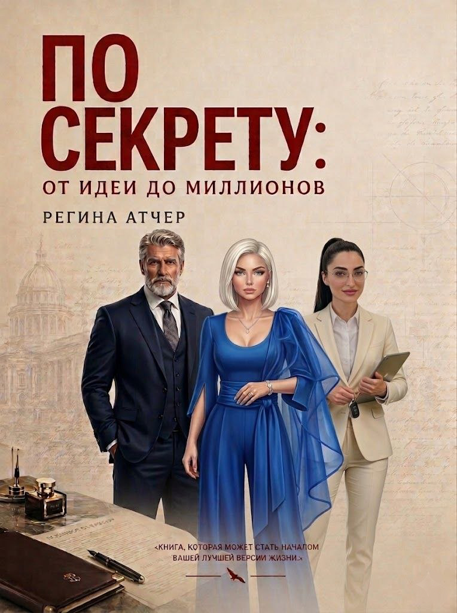

Психологический роман о пути человека к себе, с внутренними открытиями, переменами и поиском собственного предназначения.
Купить книгуЭто не просто история. Это путешествие внутрь себя. Книга соединяет художественный сюжет и практические наблюдения, которые помогают по-новому взглянуть на свои решения, возможности и внутренние ресурсы.
Через историю героев раскрываются темы выбора, перемен, личной силы и поиска своего пути.
«По секрету — это идея до миллионов»